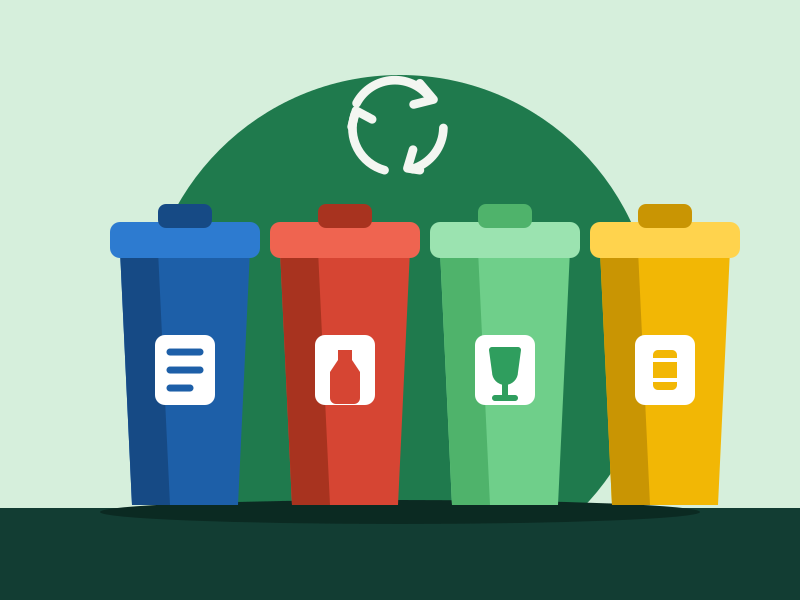

1. Separe
Divida o lixo em recicláveis, orgânicos e rejeitos. Dois recipientes em casa já ajudam muito.
Separar o lixo é o primeiro passo para dar uma nova vida aos materiais.

Divida o lixo em recicláveis, orgânicos e rejeitos. Dois recipientes em casa já ajudam muito.
Enxágue embalagens para retirar restos de alimento. Material sujo pode estragar todo o lote reciclável.
Entregue na coleta seletiva, em cooperativas ou em pontos de entrega voluntária do seu bairro.
| Material | Tempo estimado | Tipo de resíduo | Cor da lixeira |
|---|---|---|---|
| Papel | 3 a 6 meses | Papel | Azul |
| Lata de alumínio | Cerca de 200 anos | Metal | Amarela |
| Garrafa PET | Cerca de 400 anos | Plástico | Vermelha |
| Vidro | Mais de 1.000 anos | Vidro | Verde |
| Sacola plástica | 100 a 400 anos | Plástico | Vermelha |
O padrão de cores segue a Resolução Conama nº 275: